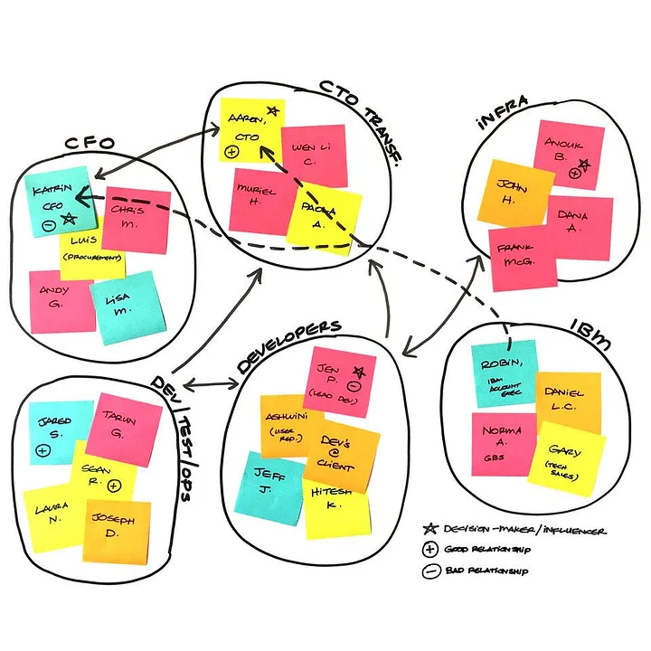

Quick Start Guide on incorporating design thinking artifacts for requirements gathering during Project Initiation Phase for Agile Data Analytics Projects
Introduction
From my recent involvement in data analytics project engagements as the Data Science and Analytics Lead at IBM, it was observed that proper requirements gathering in the project initiation phase can make a big difference to the eventual success of the project.
One of the common challenges faced during this phase revolves around translating high level management visions at 50,000ft (e.g. Embark on Digital Transformation, Employ AI) into definitive and objective project requirements for implementation. From my experience, the use of appropriate design thinking artifacts can help to guide the process more effectively.
In this article, I would like to share a high level overview on the the design thinking artifacts which worked well on our projects and an example of how they are typically woven together during the project initiation phase. Most of these artifacts shared are aligned to IBM Design Thinking Methodology and additional details are available on the IBM Design Thinking website. https://www.ibm.com/design/thinking/ (signing up for a free IBM account might be required to access the materials)
Breaking down the Initial Requirements Gathering Process
Typically the initial requirements gathering process can be broken down three main steps starting with crystallizing the overall business case of the project to the generation of project requirements. We will go through more details in each of the main steps:
- Step 1- Defining goals and objectives of the project
- Step 2- Understanding users, their current work process and envisioned to-be state
- Step 3- Initial formulation of analytics solution requirements
Step 1: Defining Goals and Objectives of the Project
The first step usually involves connecting with the project sponsor and key stakeholders who will be responsible for the outcome of the project. It is critical for the stakeholders and project team to come together and define the overall direction of the project.
Typical Stakeholders from Client: Project Sponsor, Product Owner, Project Manager, SMEs, Users
Key Objectives:
- Establish overall business case for the project including potential benefits and how success of the project will be measured
- Identify and understand key stakeholders on the project
- Identify risks and potential road blocks
Key Design Thinking Artifacts:
- Hopes and Fears
- Opportunity Canvas
- Stakeholder Map
- Stakeholder Matrix
- Assumptions & Questions
Hopes and Fears
The Hopes and Fears artifact is useful as a warm up exercise to gather inputs from the stakeholders about their hopes for the project and gain insights to their worries and concerns. At times, the fears section might also help to uncover potential pitfalls and lessons learnt from previous projects.
Opportunity Canvas
Opportunity Canvas is a very helpful artifact to provide holistic view of a project. The canvas can provide assessment on the overall readiness and identify areas with potential gaps and challenges. It is a working document that will be constantly refined throughout the requirements gathering phase.
In our engagements, we have further expanded and customized the sections of the opportunity canvas:
- Problems/Goals to be Solved
- Solution Ideas
- Value Proposition
- Key Metrics
- Target Customer/User Type Segments
- High Level Business Benefits and Impact
- Competitive Landscape
- Distribution Channel/Adoption Strategy
- Key Partners/Alliances
- Cost Structure
- Assumptions/Questions
- Constraints
- Impediments
- Squad Members Required
- BU Support Required
- Assets & Accelerators
Stakeholder Map & Stakeholder Matrix
A better understanding of stakeholders involved is critical to garner support for the project and ensure all relevant stakeholders are sufficiently engaged. The first part of the exercise will involve listing down all potential stakeholders, grouping them and identifying the relationships.

In addition to the stakeholder map, the stakeholder matrix provides another useful perspective by locating each stakeholder in the 2 by 2 matrix of Influence vs Interest.
The stakeholder map and matrix can also help to customize the communications and engagement plan for the various stakeholder groups. (e.g. type of updates, frequency of updates, attendance at meetings etc.)
Assumptions and Questions
The Assumptions and Questions chart can be prefilled with relevant information throughout the earlier discussions. At this stage, the chart can help to recap on existing assumptions, add new details that were missed and perform an initial assessment on the impact and probability as a group.
Step 2: Understanding users, their current work process and pain points
With an alignment on the overall business case and strategic direction of the project, we will shift gears in Step 2 to understand more about the end users and details around their work processes in the current and future context.
Typical Stakeholders from Client: SMEs and Users from the different groups who will be the end users
Key Objectives:
- Understanding the end users, their current work process and how they are expected to interact with the solution in their work process
- Identify wish lists and pain points
Key Design Thinking Artifacts:
- Empathy Map
- To-Be Scenario Map
Empathy Map
The empathy map aids in the understanding of the profile for the users. It is best practice to generate empathy maps for each group of users. The collection of details can be either in the context of the problem statement or in the wider context of their day to day work. The details of what they say, do, think and feel will help to paint a representative user profile of the group.
To-Be Scenario Map
Building upon the empathy map for each user group, additional details on each phase of the to-be working process can be consolidated to form the To-Be scenario map. The discussion with the users in the dimensions of doing, thinking and feeling for each of the phases will help to uncover pain points, gaps and potential benefits.
Step 3- Initial formulation of analytics solution requirements
In Step 3, we will build upon the established direction and understanding of users and their needs & wants. The key goal in this phase is to develop the solution requirements in sufficient details to start the project.
Typical Stakeholders from Client: SMEs and Users from the different groups who will be the end users
Key Objectives:
- Developing high level requirements in hills or user stories format
- Brainstorm on functional features
- Prioritize features for development
Key Design Thinking Artifacts: * Hills (User Stories) * Big Idea * Prioritization Map
User Stories or Hills Writing (Who, What, Wow)
The gathering of User Stories or Hills captures user requirements the following format:
- Who (In the capacity of a certain Role),
- What (I would like to take some action),
- Wow (To achieve a certain outcome).
This will be useful to identify target users, identify user interactions with the solution and understand the underlying purpose and outcome to be achieved.
Big Idea
Based on the user stories & hills captured, we can conduct a brainstorming session to draw out ideas on features required in each of the user stories & hills. Similar features can be categorized and grouped together to form a coherent functionality set.
Prioritization Map
The next step involves placing the features and functionality on the prioritization map. Features in the No Brainers section with the highest impact and feasibility will be planned with the highest priority for development first. This will help the project to deliver benefits early on. There is usually some deliberation involve in the prioritization between the big bets section (High value but might be less feasible) and utilities section (Higher feasibility but might deliver less value). The features in the un-wise section with low impact and feasibility will have least lower priority and are usually parked for future review.
Transiting from Project Initiation Phase to Project Planning Phase
A logical transition point from the project initiation phase to the project planning phase will be the step where the details from the prioritization map is converted into the product backlog.
Product Backlog Hierarchy
A typical product backlog can consist of various layers depending on the complexity of the project and terminology that the team or existing tool follows. Using an example from Azure DevOps board, a typical structure on the product backlog will be: * Epic * Feature * User Story (Product Backlog Item) * Task
Using the inputs from the prioritization map, the team will work closely with the product owner and users to develop the product backlog. Based on experience, most of the information captured will be at the level of features and product backlog items. The features can be grouped into Epics signifying features for each product release and broken down into product backlog items.
The rest of the project planning activities will follow on from this phase.
Example of Product Backlog Items for Data Visualization Dashboard
For data visualization features, there are three standard components to be captured as part of the product backlog as shown below:
For most dashboard visualization requirements on BI (Business Intelligence) tools such as Tableau, Qlik, PowerBI, the standard functional requirements that needs to be defined are as follows:
Analytics Flow: The usual analytics process usually presents information in a top-down approach, moving from a big picture summary to detailed report with many rows of data. An example of this is Qlik’s DAR(Dashboard, Analysis, Reporting) methodology where information in presented from the highest granularity to the lowest granularity.
Dimensions: Identifying the dimensions /features is a critical component of the function visualization requirements. From the identified dimensions, the lowest granularity of the data and a hierarchy can be derived. In addition, selected dimensions can be defined as filters. A subset of commonly used dimensions and their hierarchies in a retail context is shown below:
KPIs: KPIs are any of the columns that can provide a quantitative measure against the dimensions. It is important to capture the business rules and transformations clearly and ensure that it is aligned across the different group of stakeholders. A subset of commonly used metrics in a retail context is as shown below:
Thanks for reading and hope the information was useful in some way!